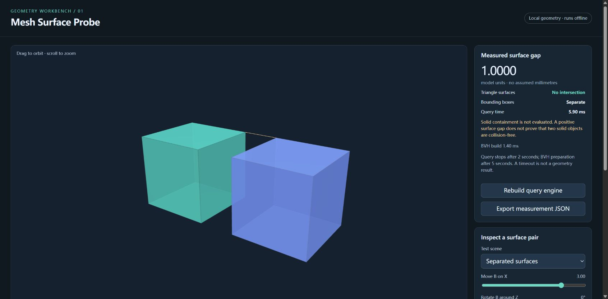

01 / GEOMETRY
Measure the gap between meshes.
Import a pair of local STL files, move one mesh and inspect the nearest surface points. Invalid files leave the prior models intact; slow queries stop with an explicit unavailable result.
17 automated checks. Browser-checked STL import, malformed input, query timeout, reset, JSON export and narrow layout.
Scope and limits
Rigid transforms; generated boxes and spheres only. Surface intersection does not detect solid containment. No registration, clinical or manufacturing validation. 6 MiB and 20,000 triangles per file are resource limits, not performance guarantees. Queries use Three.js and three-mesh-bvh; third-party notices.